API Reference#
- class Clock(initial_time=0)#
- anim_attrs(obj, *, duration, step=0, transition=<function Transition.linear>, output_seq_type=<class 'tuple'>, **animated_properties) Awaitable#
Animates attibutes of any object.
import types obj = types.SimpleNamespace(x=0, size=(200, 300)) await clock.anim_attrs(obj, x=100, size=(400, 400))
The
output_seq_typeparameter.obj = types.SimpleNamespace(size=(200, 300)) await clock.anim_attrs(obj, size=(400, 400), output_seq_type=list) assert type(obj.size) is list
- anim_attrs_abbr(obj, *, d, s=0, t=<function Transition.linear>, output_seq_type=<class 'tuple'>, **animated_properties) Awaitable#
anim_attrs()cannot animate attributes namedstep,durationandtransitionbut this one can.
- async anim_with_dt(*, step=0) AsyncIterator[TimeUnit]#
An async form of
schedule_interval().async for dt in clock.anim_with_dt(step=10): print(dt) if some_condition: break
The code above is quivalent to the code below.
def callback(dt): print(dt) if some_condition: return False clock.schedule_interval(callback, 10)
Restriction
You are not allowed to perform any kind of async operations during the loop.
async for dt in clock.anim_with_dt(): await awaitable # NOT ALLOWED async with async_context_manager: # NOT ALLOWED ... async for __ in async_iterator: # NOT ALLOWED ...
This is also true for other
anim_with_xxxAPIs.
- async anim_with_dt_et(*, step=0) AsyncIterator[tuple[TimeUnit, TimeUnit]]#
anim_with_dt()andanim_with_et()combined.async for dt, et in clock.anim_with_dt_et(...): ...
- async anim_with_dt_et_ratio(*, duration, step=0) AsyncIterator[tuple[TimeUnit, TimeUnit, float]]#
anim_with_dt(),anim_with_et()andanim_with_ratio()combined.async for dt, et, p in clock.anim_with_dt_et_ratio(...): ...
- async anim_with_et(*, step=0) AsyncIterator[TimeUnit]#
Total elapsed time of iterations.
timeout = ... async for et in clock.anim_with_et(...): ... if et > timeout: break
- async anim_with_ratio(*, duration, step=0) AsyncIterator[float]#
async for p in clock.anim_with_ratio(duration=...): print(p * 100, "%")
- property current_time: TimeUnit#
- async interpolate_scalar(start, end, *, duration, step=0, transition=<function Transition.linear>) AsyncIterator#
Interpolates between the values
startandendin an async-manner.async for v in clock.interpolate(0, 100, duration=100, step=30): print(int(v))
elapsed time
output
0
0
30
30
60
60
90
90
120
100
- async interpolate_sequence(start, end, *, duration, step=0, transition=<function Transition.linear>, output_type=<class 'tuple'>) AsyncIterator#
Same as
interpolate_scalar()except this one is for sequence type.async for v in clock.interpolate_sequence([0, 50], [100, 100], duration=100, step=30): print(v)
elapsed time
output
0
(0, 50)
30
(30, 65)
60
(60, 80)
90
(90, 95)
120
(100, 100)
- move_on_after(timeout) AbstractAsyncContextManager[Task]#
Returns an async context manager that applies a time limit to its code block, like
trio.move_on_after()does.async with clock.move_on_after(10) as bg_task: ... if bg_task.finished: print("The code block was interrupted due to a timeout") else: print("The code block exited gracefully.")
- n_frames(n: int) Awaitable#
Waits for a specified number of times the
tick()to be called.await clock.n_frames(2)
If you want to wait for one time,
sleep()is preferable for a performance reason.await clock.sleep(0)
New in version 0.1.1.
- async run_in_executor(executer: ThreadPoolExecutor, func, *, polling_interval) Awaitable#
Runs a function within a
concurrent.futures.ThreadPoolExecutor, and waits for the completion of the function.executor = ThreadPoolExecutor() return_value = await clock.run_in_executor(executor, func)
- async run_in_thread(func, *, daemon=None, polling_interval) Awaitable#
Creates a new thread, runs a function within it, then waits for the completion of that function.
return_value = await clock.run_in_thread(func)
- schedule_interval(func, interval) ClockEvent#
Schedules the
functo be called repeatedly at a specified interval.There are two ways to unschedule the event. One is the same as
schedule_once().event = clock.schedule_once(func, 10) event.cancel()
The other one is to return
Falsefrom the callback function.def func(dt): if some_condition: return False
- schedule_once(func, delay) ClockEvent#
Schedules the
functo be called after thedelay.To unschedule:
event = clock.schedule_once(func, 10) event.cancel()
- tick(delta_time)#
Advances the clock time and triggers scheduled events accordingly.
- class ClockEvent#
- callback: Callable[[TimeUnit], None]#
The callback function registered using the
Clock.schedule_xxx()call that returned this instance. You can replace it with another one by simply assigning to this attribute.event = clock.schedule_xxx(...) event.callback = another_function
- cancel()#
- class Transition#
A copy of
kivy.animation.AnimationTransition.- in_back(p)#
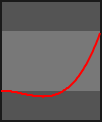
- in_bounce(p)#
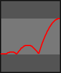
- in_circ(p)#
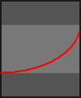
- in_cubic(p)#
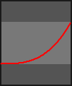
- in_elastic(p)#
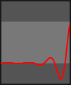
- in_expo(p)#
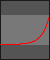
- in_out_back(p)#
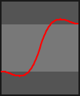
- in_out_bounce(p)#
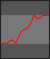
- in_out_circ(p)#
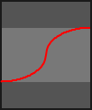
- in_out_cubic(p)#
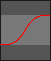
- in_out_elastic(p)#
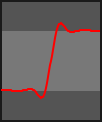
- in_out_expo(p)#
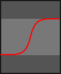
- in_out_quad(p)#
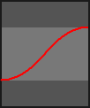
- in_out_quart(p)#
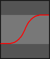
- in_out_quint(p)#
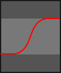
- in_out_sine(p)#
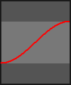
- in_quad(p)#
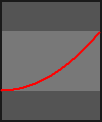
- in_quart(p)#
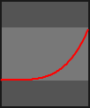
- in_quint(p)#
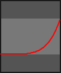
- in_sine(p)#
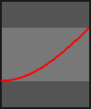
- linear(p)#
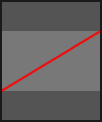
- out_back(p)#
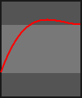
- out_bounce(p)#
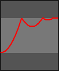
- out_circ(p)#
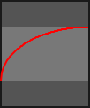
- out_cubic(p)#
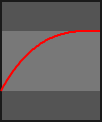
- out_elastic(p)#
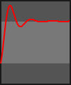
- out_expo(p)#
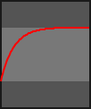
- out_quad(p)#
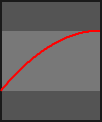
- out_quart(p)#
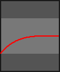
- out_quint(p)#
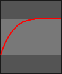
- out_sine(p)#
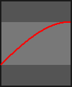